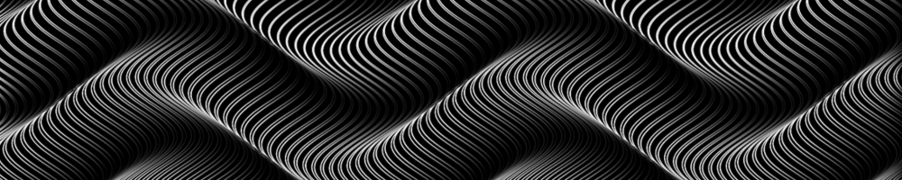

20251002朝に書く熱

子猫はどうやら長細いものが大好きな性質のようで、鉛筆やペンを持っていると大興奮する。というわけで子猫がうちに来てから自然とキーボードで物を書くことが増えた。 わたしの執筆スタイルはアナログ：デジタルで半々だ。キーボードで書くよりも鉛筆やペンで書いたほうがしっくりくる内容というものがある気がする。アナログとデジタルを行ったり来たりして出来上がる作品もある。タブレット端末はまだ試したことがない。そのうちやってみたいと思うけど、予想をするに、おそらく、まっさらのA4用紙に研ぎきった鉛筆、それでさあ書くよ、と思った時のあれに勝るものは中々ないだろう。それでも新しい道具というのは試してみたいものだ。わたしはいろいろな道具をいろいろな方法で試してみるのが好きだ。 というわけで、今はその愛してやまない「A4用紙×研ぎきった鉛筆・さあ書くよ作戦」、略してA4鉛筆さ戦[1]がむずかしいから、次に大好きなオフラインのソフト（このコラム含め、わたしのサイトは全てVisual Studio Codeというソフトで書いている）でコラムを書いているというわけだ。 このスタイルのいいところは、HTMLやCSSで遊びまくれるところだ。ずっとこれをやりたかった気がする。知らないタグを調べて試してみるのが本当に楽しい。実験場がわたしには必要だったのかもしれない。一過性の熱だとしても。
- これはギャグだ。でも「戦」という単語でギャグと言い張るのはもう自分の中ではわりと厳しくなっている。